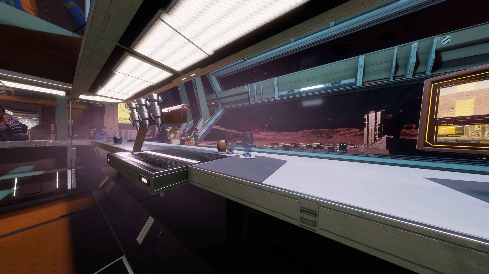

Panoramic Lounge
Observation deck, social area and station bar facing the inner orbital line.
Orbital facility positioned at the primary star of Trianguli Sector JN-S a4-0. Panoramic lounge access, large docking hubs and scheduled Fleet Carrier departures.

Observation deck, social area and station bar facing the inner orbital line.

Wide access bays for pilot transfer, short-term hold and heavy traffic handling.

Scheduled transfers toward deep-space and return routes from ARGINE staging point.
Core access summary
Navigation reference